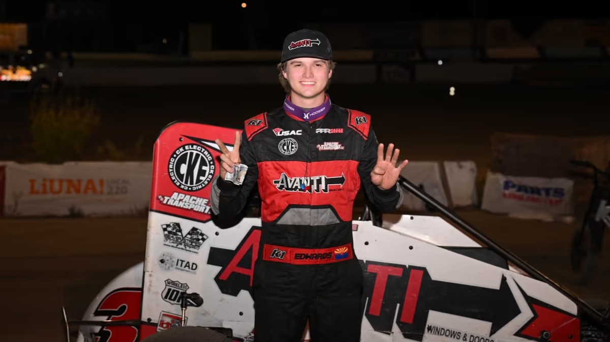

Edwards Wins 2024 USAC Western States Midget Finale at Kern; Cade Lewis Clinches Title
Drake Edwards passed Cade Lewis just before the midpoint of the 30-lap feature at Kevin Harvick’s Kern Raceway on Oct. 5, 2024. Lewis finished third and won the series championship by 11 points.

Drake Edwards of Surprise, Arizona won the Avanti Windows & Doors USAC Western States Midget season finale on Oct. 5, 2024 at The Dirt Track at Kevin Harvick’s Kern Raceway in Bakersfield, California. Edwards passed Cade Lewis just before the midpoint of the 30-lap feature for his second series victory of the season and also earned Rookie of the Year honors with a runner-up finish in the final points.
Ben Worth of Coalinga, California led the first seven laps from the outside of the front row before Edwards slid in front in turn two on lap eight. Contact between those two allowed Lewis to drive from third to first. Lewis led laps eight and nine on the bottom before Edwards used the high side to lead lap 10. Sparks and a ball of flame then came from the back of Edwards’ car as he got on the brakes in turns one and two, and Lewis led laps 11 and 12. Edwards drove around the outside of Lewis off turn two to retake the lead for good on lap 13.
Jett Yantis of Bakersfield, the night’s fast qualifier, passed Lewis for second and challenged Edwards on the final lap, but a slide-job attempt entering turn three was stifled when ninth-place Kyle Hawse occupied the low line. Edwards held on for the win. Yantis finished second, Lewis third, Brandt Twitty fourth and Dane Culver fifth. Worth, who led the opening seven laps, retired after an incident in turns one and two.
Lewis, of Bakersfield, won the series driving championship by 11 points over Edwards, 622-611, the first title of his career. The result also gave car owner Dean Alexander of New Zealand his first series entrant championship. Edwards started fourth in the Petty Performance Racing No. 3p and also won the first heat.